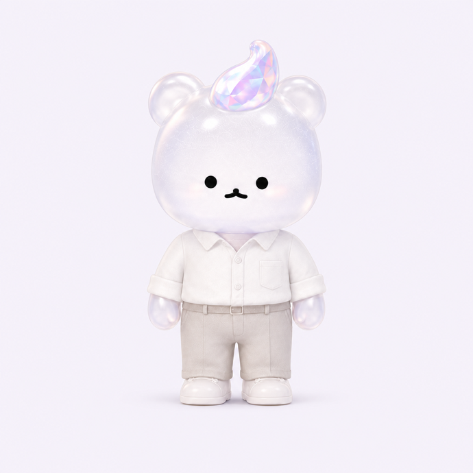

<!doctype html>
<html lang="ko">
<head>
<meta charset="utf-8">
<meta name="viewport" content="width=device-width,initial-scale=1,viewport-fit=cover">
<title>추구미즘</title>
<script>
// 앱 로그인 반송 — Supabase가 로그인 토큰을 앱 스킴 대신 이 페이지로 내려보낸다
// (redirect_to 허용 목록 판정이 불안정해 Site URL 폴백이 사실상 유일한 귀환 경로다).
// 웹에서 시작한 로그인은 같은 탭이라 czm_oauth_web 표식이 남아 있고,
// 앱의 로그인 창(ASWebAuthenticationSession)은 새 컨텍스트라 표식이 없다 —
// 표식 없이 토큰이 왔으면 앱에서 온 것이므로 앱 스킴으로 되던져 창을 닫게 한다.
(function(){
  var h = location.hash;
  if (h.indexOf("access_token") < 0 && h.indexOf("error_description") < 0) return;
  if (!/iPhone|iPad/.test(navigator.userAgent)) return;            // 앱은 iOS뿐
  try {
    if (sessionStorage.getItem("czm_oauth_web")) { sessionStorage.removeItem("czm_oauth_web"); return; }
  } catch(e) { return; }
  location.replace("chugumism://auth" + h);
})();
</script>
<!--
  앱 기틀 v1 Phase 1 — 홈 + 퀘스트 루프
  설계: docs/superpowers/specs/2026-08-16-app-foundation-v1-design.md §3-2 §4
  사전: modules/quest-dict.json (이론설계_퀘스트사전 v1.2 전사본)

  화면이 지켜야 하는 계약 (설계서 §1)
    · 3종 합산 금지 — 스탯 3개를 더한 수를 절대 그리지 않는다
    · 레벨·등급·진행률 %·평균·백분위·랭킹 금지 — 비교 대상은 지난 나뿐
    · 숫자는 줄지 않는다 · 구미는 실망하지 않는다 · 쌓인 것만 표시한다
    · 0은 숫자로 쓰되 조용히 — 아이템·스킬이 다 "첫 칸"으로 뜨니 셋 중 둘이 같은 말이 되어
      현황이 안 읽혔다(대표 2026-08-24). "0을 감춘다" → "0을 부끄럽지 않게 보인다"로 개정.

  ※ 유저향 문구는 전부 [마케팅 검수 통과 2026-08-21] 초안. 커밋 전 brand/문체가이드 3단 통과 필요.
-->
<!-- Pretendard 실로드 + 공통 토큰 정본(czm-ui.css, P0-1 2026-08-23).
     토큰(:root)·접힘(details.fold)·ph-glass는 czm-ui.css가 정본 — 여기 중복 정의를 지웠다. -->
<link rel="preconnect" href="https://cdn.jsdelivr.net" crossorigin>
<link rel="stylesheet" href="https://cdn.jsdelivr.net/gh/orioncactus/pretendard@v1.3.9/dist/web/variable/pretendardvariable-dynamic-subset.min.css">
<link rel="stylesheet" href="czm-ui.css">
<style>
*{box-sizing:border-box}
/* 밖 여백 0 · 화면 하나 = 100dvh. 문서처럼 세로로 잇지 않는다 (대표 2026-08-24 "앱은 숏폼").
   셸(.screen / .screen-top / .screen-body / .screen-btm)은 czm-ui.css 정본을 쓴다.
   대기 화면 그라디언트는 body에 고정 — 화면이 바뀌어도 공기는 같다. */
body{margin:0;color:var(--ink);
  font:16px/1.6 'Pretendard Variable','Pretendard',-apple-system,BlinkMacSystemFont,'Apple SD Gothic Neo',sans-serif;
  -webkit-font-smoothing:antialiased;word-break:keep-all;
  background:radial-gradient(circle at 12% 6%,rgba(242,169,196,.38) 0%,rgba(242,169,196,0) 42%),
             radial-gradient(circle at 92% 22%,rgba(156,200,232,.32) 0%,rgba(156,200,232,0) 46%),
             radial-gradient(circle at 50% 105%,rgba(185,175,209,.30) 0%,rgba(185,175,209,0) 55%),var(--bg);
  background-attachment:fixed}
html,body{overscroll-behavior-y:none}
h1{font-size:21px;margin:0;letter-spacing:-.02em}
.hd{display:flex;align-items:baseline;justify-content:space-between;gap:12px}
.hd small{color:var(--sub);font-size:12px;flex:none}
/* 하단 보조 조작 — 주 CTA 아래 한 줄. 버튼 셋을 세로로 쌓지 않는다 */
.btm-quiet{display:flex;align-items:center;justify-content:center;gap:4px;margin-top:2px}
.btm-quiet .btn.quiet{margin:0;padding:8px 10px}
.btm-quiet i{color:var(--line);font-style:normal}
/* .card·.btn 3종은 czm-ui.css 정본을 쓴다 — 여기 복제본이 남아 있어서 v2 토큰(프리즘
   그라데이션 CTA·로고 잉크)이 이 화면에만 안 왔다(대표 지적 2026-08-24). 지운 자리다. */
/* 본문 블록 사이 간격 — czm-ui v2는 이 간격을 페이지에 맡긴다(값은 --gap-block 토큰).
   목록으로 늘어선 .q끼리는 예외다: 자기 margin-bottom(8px)이 이미 잇고 있다. */
.screen-body > * + *{margin-top:var(--gap-block)}
.screen-body > .q{margin-bottom:0}
.screen-body > .q + .q{margin-top:var(--sp-2)}
.card h2{font-size:13px;color:var(--accent);margin:0 0 10px;font-weight:700;letter-spacing:.02em}
.lead{font-size:18px;line-height:1.5;margin:0 0 4px;letter-spacing:-.01em;font-weight:600}
.note{font-size:13.5px;color:var(--sub);margin:6px 0 0;line-height:1.6}
button{font:inherit;cursor:pointer}
.q{display:block;width:100%;text-align:left;background:var(--card);border:1.5px solid var(--line);
   border-radius:12px;padding:var(--sp-4);margin-bottom:var(--sp-2);color:var(--ink)}
.q:active{background:var(--soft);border-color:var(--accent)}
.q .t{font-size:15.5px;line-height:1.45;font-weight:600}
.q .m{font-size:12.5px;color:var(--sub);margin-top:5px;display:flex;gap:7px;flex-wrap:wrap;align-items:center;font-weight:400}
.tag{border:1px solid var(--line);border-radius:99px;padding:1px 8px;font-size:11px;color:var(--sub)}
.tag.free{border-color:#CFE0D4;color:var(--ok)}
.stats{display:grid;grid-template-columns:repeat(3,1fr);gap:9px}
.st{background:var(--soft);border-radius:13px;padding:13px 11px;text-align:center}
.st b{display:block;font-size:24px;font-weight:700;letter-spacing:-.02em}
.st span{font-size:11.5px;color:var(--sub)}
/* 0도 숫자로 적는다. 대신 잉크를 낮춰 조용하게 — 감추면 현황이 안 읽힌다(대표 2026-08-24) */
.st.zero b{color:var(--sub)}
.stats.mini{gap:7px}
.stats.mini .st{padding:9px 6px;border-radius:11px}
.stats.mini .st b{font-size:19px}
.field{width:100%;padding:13px;border:2px solid var(--line);border-radius:12px;font:inherit;margin-top:10px;background:#fff}
.field:focus{outline:none;border-color:var(--accent)}
/* 접힘 상자(details.fold)는 czm-ui.css 정본을 쓴다 */
.demo{display:grid;grid-template-columns:auto 1fr;gap:6px 14px;background:var(--soft);
  border-radius:12px;padding:14px 15px;margin-top:4px;align-items:baseline}
.demo-l{font-size:12px;color:var(--sub)} .demo-v{font-size:15px;font-weight:600}
.hidden{display:none}
.chk{font:13px/1.7 ui-monospace,SFMono-Regular,Menlo,monospace;white-space:pre-wrap}
.chk .p{color:var(--ok)} .chk .f{color:var(--danger);font-weight:700}
.banner{background:#FFF6E8;border:1px solid #F0DEC0;border-radius:12px;padding:11px 13px;font-size:13px;color:#7A5C2E}

/* ── 프리즘 홈 (고객팀 리디자인 1차, 시안=스펙 2026-08-21) ─────────────
   여백 토큰(시트①): 화면 좌우24 · 섹션22 · 카드 안쪽 22~30 · CTA 위 14
   .ph-bg는 폐지 — 그라디언트를 body로 올렸다(2026-08-24 셸 전환). */
.ph-head{display:flex;flex-direction:column;gap:6px;padding:0;}
.ph-h1{font-size:24px;font-weight:800;letter-spacing:-.015em;margin-left:-1px;color:var(--ink);}
.ph-sub{font-size:13.5px;color:var(--sub);}
/* .ph-glass는 czm-ui.css 정본을 쓴다 (2026-08-23 이관) */
.ph-prism{display:flex;flex-direction:column;gap:var(--sp-3);padding:var(--card-pad);}
.ph-prism .row{display:flex;justify-content:space-between;align-items:baseline;}
.ph-prism .t{font-size:13.5px;font-weight:700;color:var(--deep);}
.ph-prism .d{font-size:12px;color:var(--sub);}
.ph-bar{position:relative;height:14px;border-radius:7px;}
.ph-ends{display:flex;justify-content:space-between;font-size:12px;font-weight:600;}
/* 쌓은 것 한 줄 — 프리즘 바 아래. 진행점을 대신하는 자리라 실제 숫자만 온다 */
.ph-grown{font-size:12.5px;color:var(--sub);margin:-2px 0 0;}
.ph-grown b{color:var(--accent);font-weight:800;}
/* 해낸 직후 "무엇이 얼마나" — 이 화면의 주인공이라 숫자를 크게 세운다 */
.grew{display:flex;align-items:baseline;justify-content:center;gap:9px;margin:16px 0 4px;}
.grew span{font-size:14px;font-weight:700;color:var(--deep);}
.grew b{font-size:30px;font-weight:800;color:var(--accent);line-height:1;}
.grew i{font-style:normal;font-size:17px;color:var(--sub);}
/* 미션 카드의 "해내면 얼마나" — 제목 아래 한 줄, 약속이라 조용하게 */
.gain-hint{display:inline-block;font-size:12.5px;font-weight:700;color:var(--accent);
  background:rgba(255,255,255,.62);border-radius:999px;padding:4px 11px;align-self:flex-start;}
/* 카드 사이 간격은 .screen-body의 gap(--gap-block)이 준다 — margin-top으로 또 벌리지 않는다 */
.ph-hero{position:relative;overflow:hidden;display:flex;flex-direction:column;gap:var(--sp-4);border-radius:20px;padding:26px var(--gutter);box-shadow:0 12px 32px rgba(74,43,92,.10);min-height:196px;}
/* 진단 전 화면은 이 카드가 화면의 전부다 — 제목·설명·구미가 한 덩어리로 서야
   흰 박스 밖에 빈 여백이 안 생긴다(대표 2026-08-24). 구미는 아래로 내려 글과 겹치지 않게. */
/* 카드 하나가 화면의 주인공이다 — 높이를 콘텐츠에 맡기고 셸이 중앙에 놓는다.
   억지로 늘리면 카드 안이 비고, 고정하면 카드 밖이 빈다. */
.ph-hero.intro-hero{padding:30px var(--gutter) 32px;min-height:0;gap:var(--sp-3);}
.intro-hero .ph-title{font-size:27px;padding-right:0;}
.intro-hero .ph-whytxt{padding-right:0;}
/* 구미 원본은 흰 사각 배경이라 그냥 얹으면 카드 위에 네모가 뜬다 — 원형으로 오려낸다 */
.intro-hero .ph-gumi{position:relative;top:auto;right:auto;margin:0 auto;width:156px;height:156px;
  border-radius:50%;overflow:hidden;}
.intro-hero .ph-gumi img{position:absolute;inset:0;width:156px;height:156px;transform:scale(1.18);filter:none;}
.intro-hero .ph-gumi .pad{display:none;}
.ph-gumi{position:absolute;right:10px;top:64px;width:136px;height:136px;pointer-events:none;}
.ph-gumi .pad{position:absolute;left:50%;top:50%;width:132px;height:132px;transform:translate(-50%,-50%);border-radius:999px;background:radial-gradient(circle,rgba(255,255,255,.95) 0%,rgba(255,255,255,.7) 55%,rgba(255,255,255,0) 78%);}
.ph-gumi img{position:absolute;inset:0;width:136px;height:136px;object-fit:contain;transform:rotate(-6deg);filter:drop-shadow(0 8px 14px rgba(183,107,163,.3));}
.ph-title{font-size:24px;font-weight:800;line-height:1.35;letter-spacing:-.015em;margin-left:-1px;color:var(--ink);padding-right:120px;word-break:keep-all;}
.ph-whytxt{font-size:14px;color:var(--sub);line-height:1.6;padding-right:120px;}
/* 주 CTA의 자체 그라데이션은 지웠다 — czm-ui.css의 --cta(프리즘 딥 3색)가 정본이다. */
/* ── 오늘의 착용 · 옷장 ────────────────────────────────────────────
   무드 칩 한 줄(가로 스크롤) — 아침 화면의 유일한 선택 조작(설계도 T-H) */
.chips{display:flex;gap:var(--sp-2);overflow-x:auto;-webkit-overflow-scrolling:touch;
  padding:var(--sp-1) 0 var(--sp-2);scrollbar-width:none;}
.chips::-webkit-scrollbar{display:none;}
.chip{flex:none;border:1.5px solid var(--line);background:var(--card);border-radius:99px;
  padding:9px var(--sp-4);min-height:40px;font-size:13.5px;font-weight:600;color:var(--sub);}
.chip.on{border-color:var(--accent);background:var(--soft);color:var(--deep);}
/* 색 고르기 — 팔레트 정본(pc-palette.json)의 베스트 색을 타입 순서대로 편다.
   8타입 × 14색 = 112칸이라 그대로 펴면 화면이 700px 넘게 흘러 담기 버튼이 화면 밖으로 나갔다
   (실측 2026-08-24). 색 고르기는 훑어보는 위젯이라 **그 상자 안에서만** 스크롤한다 —
   화면이 스크롤하는 것과 다르다. 상자 밖(이름·부위·담기)은 늘 제자리에 보인다. */
.sw{display:grid;grid-template-columns:repeat(auto-fill,minmax(38px,1fr));gap:var(--sp-2);margin-top:var(--sp-2);
  max-height:186px;overflow-y:auto;overscroll-behavior:contain;padding:2px;}
.swatch{aspect-ratio:1;min-height:38px;padding:0;border-radius:9px;border:1px solid rgba(0,0,0,.10);}
.swatch.on{outline:3px solid var(--accent);outline-offset:1px;}
/* margin-top:auto가 셸의 중앙 정렬을 이겨서 히어로 아래 330px 구멍을 만들고 있었다
   (대표 지적 2026-08-24). 간격은 .screen-body의 gap이 준다. */
/* ── 홈 = 허브 (대표 2026-08-24) ────────────────────────────────
   "난 지금 어떤 상태이고 / 뭘 해야 하고 / 뭘 시도할 수 있는지"를 한 화면에.
   세 덩어리로만 세운다 — 상태 카드 · 오늘의 미션 카드 · 기능 그리드.
   기능 단위로 묶는다: 설명과 그 설명의 실행 버튼은 **같은 카드 안에** 있다.
   그래서 홈에는 하단 고정 CTA가 없다. 카드가 자기 버튼을 갖는다. */
.ph-prism .stats{border-top:1px solid var(--line);padding-top:var(--sp-3);}
/* 미션 카드가 버튼까지 품는다 — 구미를 제목 옆으로 줄여 버튼 자리를 비운다 */
.home-hero{gap:var(--sp-3);padding:var(--card-pad);min-height:0;}
.home-hero .ph-gumi{top:12px;right:10px;width:84px;height:84px;}
.home-hero .ph-gumi img{width:84px;height:84px;}
.home-hero .ph-gumi .pad{width:84px;height:84px;}
.home-hero .ph-title{font-size:20px;padding-right:88px;}
.home-hero .ph-whytxt{padding-right:0;}
.home-hero .btn{margin-top:0;}
.home-hero .btm-quiet{margin-top:0;}
/* 기능 그리드 — 앱에서는 탭바가 기록·내 결과·도구를 이미 갖고 있어 그 셋이 빠지고 한 줄이 된다 */
.ph-grid{display:grid;grid-template-columns:repeat(3,1fr);gap:var(--sp-3);}
.ph-entry{flex:1;display:flex;align-items:center;justify-content:center;gap:var(--sp-2);min-height:48px;border:1px solid rgba(255,255,255,.7);border-radius:var(--radius-btn);background:rgba(255,255,255,.44);backdrop-filter:blur(15px);-webkit-backdrop-filter:blur(15px);color:var(--ink);font-size:13.5px;font-weight:600;text-decoration:none;cursor:pointer;}
</style>
</head>
<body>
<div class="screen" id="app"></div>

<!-- 계약층. 모듈보다 먼저 온다 — 저장 키·좌표·측정값 모양을 여기서 꺼내 쓴다 -->
<script src="czm-core.js"></script>
<!-- 스탯·착용 산식 정본(theory/산식_RPG스탯성장_v1 구현체). 여기서 산식을 다시 만들지 않는다 -->
<script src="czm-stats.js"></script>
<script type="module">
// 모듈 캐시 무력화. "?v=dev"는 배포 시 커밋 해시로 치환된다(deploy_survey.sh).
// 로컬에서는 매번 다른 값이어야 한다 — 고정값이면 개발 중 고친 코드가 캐시에 가려진다(두 번 겪었다).
// 정적 import는 변수를 못 받으므로 동적 import를 쓴다. 문자열 "?v=dev"는 sed가 찾을 수 있게 그대로 둔다.
const MODV = /^(localhost|127\.|$)/.test(location.hostname) ? `?t=${Date.now()}` : "?v=dev";

// 모듈 격리 (모듈구조 v1 규칙 4) — 하나가 죽어도 페이지는 뜬다.
// 오늘 quest-engine의 export 하나가 빠졌을 때 화면이 통째로 백지가 됐다.
// 걸음이 깨져도 기록·영상·의견은 보여야 한다. 실패는 그 자리에만 남긴다.
const DOWN = [];
async function mod(path, label){
  try { return await import(`${path}${MODV}`); }
  catch(e){ console.error("모듈 로드 실패 —", path, e); DOWN.push(label); return null; }
}
const QE = await mod("./quest-engine.js", "미션");   // 유저향 표기 — 내부 용어 '걸음'은 화면에 내지 않는다 [게이트 통과]
const SS = await mod("./session.js", "계정");
const { issueOffer, judgeSkill, selfCheck, withKnowledge } = QE ?? {};
const { ensureUser, linkUid, sbFetch, fetchStats, removeStat, PUBLIC,
        isSignedIn, oauthStart, captureRedirect, emailLink, signOut } = SS ?? {};
const downBanner = () => DOWN.length
  ? `<div class="banner">${DOWN.join("·")} 기능이 잠깐 안 되고 있어요. 나머지는 그대로 쓰실 수 있어요.</div>` : ``;

const $ = id => document.getElementById(id);
const app = $("app");
const K = CZM.KEYS, LS = CZM.store;   // 저장 키·읽기쓰기는 계약층이 소유한다

let UID = LS.raw(K.uid);   // index.html은 생문자열로 저장한다
if (!UID) { UID = crypto.randomUUID(); try{ localStorage.setItem(K.uid, UID); }catch(e){} }

// 퀴즈는 이론팀 파일이 원천이다. 사전에 복사하지 않고 실행 시 합친다 —
// 문항이 늘면 코드를 안 고쳐도 학습 칸이 는다. (배포 시 경로는 deploy_survey.sh가 고친다)
const [DICT0, QUIZ] = await Promise.all([
  fetch("quest-dict.json", {cache:"no-store"}).then(r => r.json()),
  fetch("quest-quiz.json", {cache:"no-store"}).then(r => r.ok ? r.json() : null).catch(() => null),
]);
const DICT = (QUIZ && withKnowledge) ? withKnowledge(DICT0, QUIZ) : DICT0;

// ── 서버 기록 ────────────────────────────────────────────────
// 로컬 계측 오염 방지 (index.html:271과 같은 규율, 2026-08-05).
// 이게 없어서 개발 중 테스트가 운영 DB에 그대로 쌓였다 — 매번 손으로 지워야 했다.
// 서버 왕복을 실제로 확인해야 할 때만 ?live=1 로 연다.
const LOCAL = /^(localhost|127\.|$)/.test(location.hostname)
              && !new URLSearchParams(location.search).has("live");
// 개발·검수 전용 노출 게이트 — "엔진 자체 점검"은 ?dev=1일 때만 (P0-5, photo.html과 같은 규칙)
const DEV = new URLSearchParams(location.search).get("dev")==="1";
// extra는 fetch 옵션 통로 — 페이지를 떠나는 전송은 {keepalive:true} 필수(데이터 운영규약).
const sbPost = (table, row, extra={}) => LOCAL ? Promise.resolve(true)
  : sbFetch(table, {method:"POST", headers:{Prefer:"return=minimal"}, body:JSON.stringify(row), ...extra});
const track = (event, props={}, extra={}) => sbPost("events", {user_id:UID, event, props, app_version:"home_v1"}, extra);

// ── 상태 ─────────────────────────────────────────────────────
// 서버가 원천이다. 로컬은 조회가 실패했을 때만 쓰는 사본 — 두 벌을 동시에 진실로 삼지 않는다.
let STATS = LS.get(K.stats, []);          // [{id, kind, ref, slot, attrs, at}]
const st = {
  get active(){ return LS.get(K.activeQuest, null); },
  set active(v){ LS.set(K.activeQuest, v); },
  add(e){ STATS = [...STATS, e]; LS.set(K.stats, STATS); },
  drop(id){ STATS = STATS.filter(s => s.id !== id); LS.set(K.stats, STATS); },
  get skipped(){ return LS.get(K.skipped, []); },
  set skipped(v){ LS.set(K.skipped, v); },
};
const diag  = LS.get(K.diag, null);
// 타입 색 — 프리즘 진행 바 전용. 정본은 index.html TYPES(이론 소유 아님, 표시 토큰).
// 값이 바뀌면 index와 같이 바꾼다.
const TCOLOR={romantic:"#F2A9C4",pure:"#9CC8E8",elegant:"#B9AFD1",energetic:"#F5B84F",
              gorgeous:"#C0546B",classic:"#C2A377",charisma:"#4A2B5C",chic:"#5C7FA3"};
const photo = LS.get(K.photo, null);
const cell  = id => DICT.cells.find(c => c.id === id);
const count = kind => STATS.filter(s => s.kind === kind).length;

/* ── 미션 가산 (theory/초안_미션가산매핑_v1_2026-08-24.md) ──────────────
   규칙은 czm-stats.js가 갖고 있다 — 여기서 판정을 다시 짜지 않는다.
   대상 타입은 발행 시점에 확정해 active quest에 심는다(§1-2). 완료 때 재판정하지 않는다. */
const USER  = () => ({want_type: diag?.want ?? null, have_type: diag?.have ?? null});
const tName = k => DICT?.type_names?.[k] ?? k;
// 표시 스탯 = 출발선 + 쌓은 것. 출발선은 진단이 정해 chugu_diag에 남긴다(index.html).
// 그 값이 없는 옛 진단에서는 숫자 대신 오른 양만 말한다 — 없는 기준선을 지어내지 않는다.
const statNow = () => diag?.base_stats
  ? CZMStats.finalStats(diag.base_stats, CZMStats.gainsOf(STATS), null) : null;

/* §6-1 grant — 지급할 것이 있으면 stat_entries 행에 얹을 칸을 돌려준다.
   이미 준 등급 이하면 아무것도 주지 않는다: 중복도 강등도 여기서 막힌다. */
function gainFor(c, event, stamped){
  const ev = CZMStats.evidenceOf(c, event);
  if (!ev) return null;
  const want  = CZMStats.RUNG[ev];
  const given = STATS.filter(s => s.ref === c.id).reduce((n, s) => n + (s.gain || 0), 0);
  if (want <= given) return null;
  return {gain: want - given, evidence: ev, gain_version: "v1",
          gain_type: stamped || CZMStats.targetType(USER(), c)};
}

// 해낸 직후 — 무엇이 얼마나 올랐는지 이 자리에서 말한다. st.add 뒤에 부른다.
function grewBlock(g){
  if (!g) return ``;
  const s = statNow(), nm = esc(tName(g.gain_type));
  return s
    ? `<div class="grew"><span>${nm}</span><b>${s[g.gain_type] - g.gain}</b><i>→</i><b>${s[g.gain_type]}</b></div>`
    : `<div class="grew"><span>${nm}</span><b>+${g.gain}</b></div>`;
}

// 로그인한 뒤에만 서버와 이야기한다. 순서가 곧 의존관계다 —
// 행이 있어야 계정에 묶을 수 있고, 묶여야 own_read가 내 행을 알아본다.
async function bootSession(){
  if (LOCAL || !SS || !isSignedIn()) return;
  if (!LS.get(K.userEnsured, false) && await ensureUser(UID)) LS.set(K.userEnsured, true);
  await linkUid(UID);
  const remote = await fetchStats();
  if (remote) { STATS = remote.map(r => ({id:r.id, kind:r.kind, ref:r.ref, slot:r.slot,
                                          attrs:r.attrs ?? {}, at:r.acquired_at,
                                          removed_at:r.removed_at ?? null,
                                          // 가산 3칸을 안 옮기면 동기화가 성장분을 지운다
                                          gain:r.gain ?? 0, gain_type:r.gain_type ?? null,
                                          evidence:r.evidence ?? null}));
                LS.set(K.stats, STATS); }
  // 진단을 마치면 지식 한 칸이 자동으로 열린다 — 전 화면이 0인 첫날을 만들지 않는다(설계서 §3-4)
  if (diag && !STATS.some(s => s.ref === "diagnosis")) {
    st.add({kind:"knowledge", ref:"diagnosis", slot:null, at:new Date().toISOString()});
    sbPost("stat_entries", {user_id:UID, kind:"knowledge", ref:"diagnosis",
                            source_kind:"auto_detect", attrs:{via:"first_diagnosis"}});
  }
}

// ── 화면 ─────────────────────────────────────────────────────
const esc = s => String(s).replace(/[<&]/g, c => ({"<":"&lt;","&":"&amp;"}[c]));

// 화면 셸 — 한 화면은 위(제목)·가운데(내용)·아래(주 CTA) 셋뿐이다.
// 문서처럼 세로로 잇지 않는다: 가운데만 스크롤하고 주 CTA는 늘 엄지에 닿는 자리에 있다.
// 한 화면에 기능을 여러 개 얹지 않는다 — 넘치면 화면을 쪼갠다(대표 2026-08-24).
const shell = ({top = "", body = "", btm = ""}) =>
  `<div class="screen-top">${top}</div><div class="screen-body">${body}</div><div class="screen-btm">${btm}</div>`;

function head(title, sub = ""){
  return `<div class="hd"><h1>${title}</h1>${sub ? `<small>${sub}</small>` : ``}</div>`;
}

// 쌓인 것 3칸. 합계는 어디에도 그리지 않는다 — 셋을 더한 수는 매력 총량으로 읽힌다.
// 0도 숫자로 적는다(위 계약 개정): 셋 중 둘이 "첫 칸"으로 뜨면 무엇이 몇 개인지가 안 읽혔다.
function statsRow(mini = false){
  const rows = [["item","아이템"],["skill","스킬"],["knowledge","지식"]].map(([k,label])=>{
    const n = count(k);
    return `<div class="st${n ? "" : " zero"}"><b>${n}</b><span>${label}</span></div>`;
  }).join("");
  return `<div class="stats${mini ? " mini" : ""}">${rows}</div>`;
}

// 고객팀 회신(전체회의 2026-08-15)에서 온 값이다 — 개발팀이 지어낸 문턱이 아니다
const RETURN_GAP_DAYS = 3;

// ── 처음 온 사람 ─────────────────────────────────────────────
// 설계서 §3-3. 카드 문구는 설계서에서 그대로 가져온다.
const PREVIEW = [
  { h:"몇 분이면 여기까지 나와요",
    body:`<div class="demo"><div class="demo-l">추구미</div><div class="demo-v">로맨틱</div>
          <div class="demo-l">지금</div><div class="demo-v">클래식</div>
          <div class="demo-l">벌어진 쪽</div><div class="demo-v">웜·곡선</div></div>
          <p class="note">※ 예시 화면이에요.</p>` },
  { h:"다 바꾸라고 안 해요",
    body:`<div class="q" style="margin:0"><div class="t">아이라인 끝을 조금 내려 둥글게 그려보세요</div>
          <div class="m"><span class="tag free">돈 안 들어요</span></div></div>
          <p class="note">한 번에 하나씩만 드려요.</p>` },
  { h:"해본 건 사라지지 않아요",
    body:`<div class="stats"><div class="st"><b id="cnt">0</b><span>쌓인 것</span></div></div>` },
];

function renderPreview(i = 0){
  const c = PREVIEW[i], last = i === PREVIEW.length - 1;
  track("preview_shown", {step:i});
  app.innerHTML = shell({
    top: head("추구미즘", `${i+1} / ${PREVIEW.length}`),
    body: `<div class="card"><p class="lead">${c.h}</p>${c.body}</div>`,
    btm: `<button class="btn" id="next">${last ? "저장하고 시작하기" : "다음"}</button>
          ${last ? `` : `<button class="btn quiet" id="skip">건너뛰기</button>`}`,
  });
  if (last) {                      // 0에서 올라가는 것만 보여준다 — 줄어드는 숫자는 그리지 않는다
    let n = 0; const el = $("cnt");
    const t = setInterval(() => { el.textContent = ++n; if (n >= 12) clearInterval(t); }, 70);
  }
  $("next").onclick = () => { track("preview_advanced", {step:i}); last ? renderSignup() : renderPreview(i+1); };
  $("skip") && ($("skip").onclick = () => { track("preview_advanced", {step:i, skipped:true}); renderSignup(); });
}

// 가입·로그인 — 대표 결정 2026-08-17로 여기가 관문이 됐다. 건너뛰기가 없다.
// 구글은 안드로이드까지 보고 붙인다(대표 결정 2026-08-20). 애플과 달리 키 회전이 없다.
// ⚠ Supabase 대시보드에서 Google provider를 켜야 동작한다. 안 켜면 눌러도 에러 화면으로 간다.
// 같은 이메일이면 Supabase가 계정을 자동으로 합친다 — 카카오로 가입한 사람이 구글로 들어와도 한 계정이다.
// 네이버는 보류(대표 결정 2026-08-20) — Supabase 기본 목록에 없어 Edge Function 중계가 필요하다.
//
// 애플 로그인은 **웹에 붙이지 않는다** (대표 결정 2026-08-20).
// 승인은 났지만 웹 OAuth 방식은 Apple이 6개월마다 키를 새로 만들라고 요구한다.
// 안 바꾸면 어느 날 갑자기 로그인이 죽고 Apple이 미리 알려주지도 않는다.
// iOS 앱 안에서 네이티브(ASAuthorization)로 붙이면 그 회전이 없다 — 그때 붙인다.
// ⚠ 앱을 낼 때는 붙여야 할 가능성이 크다: App Store 4.8이 서드파티 로그인(카카오)을 두면
//    그에 준하는 프라이버시 옵션을 함께 두라고 한다. 절차는 docs/애플로그인_설정안내.md.
function renderSignup(mode = "up"){
  track(mode === "up" ? "signup_shown" : "signin_shown");
  const up = mode === "up";
  // 카드 위계(리포트 톤): 리드/부연 → 소셜 버튼 2개(브랜드 색 유지, 크기·라운드는 .btn 토큰) →
  // 이메일은 접힘(details, index.html waitSec와 같은 문법) → 전환·상태는 조용히 아래로.
  app.innerHTML = shell({ top: head(up ? "시작하기" : "로그인"), body: `<div class="card">
    <p class="lead">${up ? "기록이 남으려면 로그인이 필요해요." : "다시 오셨네요."}</p>
    <p class="note" style="margin-bottom:8px">${up ? "다음에 열어도 지난 진단이 그대로 남습니다. 이름도 나이도 안 물어봐요."
                         : "쓰시던 계정으로 들어오시면 그대로 이어져요."}</p>
    <button class="btn" id="kakao" style="background:#FEE500;color:#191600">카카오로 ${up ? "시작하기" : "로그인"}</button>
    <button class="btn" id="google" style="background:#fff;color:#1F1F1F;border:1.5px solid #DADCE0;display:flex;align-items:center;justify-content:center;gap:9px;margin-top:10px">
      <svg width="17" height="17" viewBox="0 0 48 48" aria-hidden="true"><path fill="#4285F4" d="M45.1 24.5c0-1.6-.1-2.7-.4-3.9H24v7.1h12.1c-.2 1.8-1.6 4.6-4.5 6.4l6.9 5.4c4.1-3.8 6.6-9.4 6.6-15z"/><path fill="#34A853" d="M24 46c5.9 0 10.9-2 14.5-5.3l-6.9-5.4c-1.8 1.3-4.3 2.2-7.6 2.2-5.8 0-10.7-3.8-12.5-9.1l-7.1 5.5C8.1 41.1 15.4 46 24 46z"/><path fill="#FBBC05" d="M11.5 28.4c-.5-1.4-.7-2.9-.7-4.4s.3-3 .7-4.4l-7.1-5.6C2.9 17 2 20.4 2 24s.9 7 2.4 10l7.1-5.6z"/><path fill="#EA4335" d="M24 10.6c4.1 0 6.9 1.8 8.5 3.3l6.2-6C34.9 4.5 29.9 2 24 2 15.4 2 8.1 6.9 4.4 14l7.1 5.6c1.8-5.3 6.7-9 12.5-9z"/></svg>
      Google로 ${up ? "시작하기" : "로그인"}
    </button>
    <details class="fold"><summary>이메일로 할게요</summary>
      <input class="field" id="em" type="email" inputmode="email" autocomplete="email" placeholder="이메일 주소">
      <button class="btn ghost" id="go" style="width:100%">메일로 링크 받기</button>
    </details>
    <p class="note" id="msg" style="text-align:center"></p></div>`,
    btm: `<button class="btn quiet" id="swap" style="display:block">${up ? "이미 계정이 있어요" : "처음이에요"}</button>` });
  $("kakao").onclick  = () => { track("signup_started", {method:"kakao", mode}); oauthStart("kakao"); };
  $("google").onclick = () => { track("signup_started", {method:"google", mode}); oauthStart("google"); };
  $("swap").onclick  = () => renderSignup(up ? "in" : "up");
  $("go").onclick = async () => {
    const em = $("em").value.trim(); if (!em.includes("@")) return $("em").focus();
    track("signup_started", {method:"email", mode});
    $("msg").textContent = await emailLink(em)
      ? "보낸 메일의 링크를 눌러주세요. 이 창은 닫으셔도 돼요."
      : "지금은 메일이 안 나가네요. 카카오로 해보셔도 좋아요.";
  };
}

// 도구 진입로. 진단(촬영→설문)은 단일 흐름이라 여기 두지 않는다 —
// 입구는 미진단자용 히어로 CTA와 상단 "다시 진단하기" 칩 하나씩뿐이다(대표 피드백 2026-08-23 #3).
const HUB = [
  { href: "cloth-check.html", label: "옷 색 판정", desc: "가진 옷이 내 쪽 색인지 사진으로 확인" },
  { href: "pick.html",        label: "타입별 추천", desc: "내 타입이 자주 쓰는 아이템 모음" },
];
// 기능 진입로. 홈이 허브라면 여기서 갈 수 있는 데가 다 보여야 한다(대표 2026-08-24).
// appOnly=true인 칸은 앱에서 숨긴다 — 하단 탭바가 기록·내 결과·도구를 이미 갖고 있어서다.
// 같은 기능을 한 화면에 두 번 두지 않는다(body.czm-app .app-only-hide).
const HOME_TILES = [
  { label:"오늘 뭐 입지", href:"#outfit" },
  { label:"옷장",        href:"#closet" },
  { label:"옷 색 판정",   href:"cloth-check.html" },
  { label:"기록",        href:"#record",                appOnly:true },
  { label:"내 결과",      href:"../index.html?view=report", appOnly:true },
  { label:"도구",        href:"#tools",                 appOnly:true },
];
const tileGrid = () => `<div class="ph-grid">${HOME_TILES
  .filter(t => t.href !== "../index.html?view=report" || diag?.scores)
  .map(t => `<a class="ph-entry${t.appOnly ? " app-only-hide" : ""}" href="${t.href}">${t.label}</a>`)
  .join("")}</div>`;

// 진단 전 — 이 화면의 메시지는 하나다: **모든 건 지금 내 위치를 아는 것부터 시작한다**
// (대표 2026-08-24). 그래서 제목을 카드 밖에 따로 두지 않고 한 덩어리로 묶는다 —
// 나눠 두면 제목과 카드 사이가 벌어져 흰 박스 밖에 쓸모없는 여백이 생긴다(대표 지적).
// 문구는 docs/문구원칙_유저시각_v1: 유저를 주어로 쓰지 않는다("안 받으셨어요"는 앱이
// 안 시켜놓고 유저를 탓하는 문장이었다). 앱이 무엇을 왜 하는지 먼저 말한다.
function renderNoDiag(){
  track("hub_shown", {diagnosed:false});
  app.innerHTML = shell({
    body: `<div class="ph-glass ph-hero snap intro-hero">
        <div class="ph-gumi"><div class="pad"></div></div>
        <div class="ph-title">먼저 지금의 나를<br>측정합니다</div>
        <div class="ph-whytxt">어디로 갈지는 지금 어디 있는지를 알아야 정해집니다.
          사진과 설문으로 지금 내 매력이 어떤 배합인지 재요.
          <br><br>이 좌표가 매주 미션의 기준이 됩니다.</div>
      </div>`,
    btm: `<a class="btn" href="../photo.html?flow=full" style="display:flex;align-items:center;justify-content:center;text-decoration:none">측정 시작하기</a>`,
  });
}

// 진단은 끝났는데 갈 곳이 없는 상태. 미션은 방향이 있어야 나오므로 여기서 한 가지만 시킨다.
function renderNoWant(){
  const N = DICT?.type_names ?? {};
  const hName = esc(N[diag.have] ?? diag.have);
  track("hub_shown", {diagnosed:true, has_want:false});
  app.innerHTML = shell({
    body: `<div class="ph-glass ph-hero snap intro-hero">
        <div class="ph-gumi"><div class="pad"></div></div>
        <div class="ph-title">어디로 갈지<br>정할 차례예요</div>
        <div class="ph-whytxt">지금 서 있는 자리는 <b>${hName}</b> 쪽으로 나왔어요.
          되고 싶은 모습을 정하면 거기까지 가는 지도가 그려지고, 매주 미션이 그 방향으로 나옵니다.</div>
      </div>
      <div class="ph-glass snap" style="padding:16px">
        <div class="ph-whytxt" style="margin:0">먼저 결과부터 다시 보고 정해도 좋아요.</div>
        <a class="btn ghost" href="../index.html?view=report" style="display:block;text-align:center;text-decoration:none;margin-top:10px">내 진단 결과 보기</a>
      </div>`,
    btm: `<a class="btn" href="career.html" style="display:flex;align-items:center;justify-content:center;text-decoration:none">추구미 정하기</a>`,
  });
}

function renderHome(){
  if (!diag) return renderNoDiag();
  // 진단은 했지만 추구미를 아직 안 정한 상태가 생겼다(2026-08-24 진단 분리).
  // 홈은 전부 "추구미로 가는 중"을 전제로 그려져 있어서, 그대로 두면 갈 곳 없이
  // 프리즘·미션·진행도가 뜬다. 이 화면의 할 일은 하나뿐이다 — 갈 곳 정하기.
  if (!diag.want) return renderNoWant();
  track("hub_shown", {diagnosed:true});
  autoIssue();                 // 홈은 오늘의 미션을 **정해준다** — 고르라고 되묻지 않는다
  const a = st.active;
  // ── 프리즘 홈 상단 (시안 Home.dc.html = 스펙) ──────────────────────
  const N = DICT?.type_names ?? {};
  const wName = esc(N[diag.want] ?? diag.want), hName = esc(N[diag.have] ?? diag.have);
  const wCol = TCOLOR[diag.want] || "#B76BA3", hCol = TCOLOR[diag.have] || "#9CC8E8";
  const days = diag.ts ? Math.max(1, Math.floor((Date.now()-diag.ts)/864e5)+1) : 1;
  // 진행점(잠정 6%p/걸음)은 **뺐다.** 바 위의 점은 "추구미까지 몇 %"를 주장하는데,
  // 도착 지점의 값이 우리에게 없어서 무엇으로 나눠도 지어낸 수가 된다. 성장분으로
  // 바꿔 봐도 분모가 없기는 마찬가지다 — 실제로 아는 수 하나만 아래에 적는다.
  // 좌표가 어디까지 갔는지는 재측정이 답하고, 그건 「나의 4주」 끝에서 다시 찍는다.
  const grown = CZMStats.gainsOf(STATS)[diag.want] || 0;
  const weeks = Math.max(1, Math.ceil(days/7));
  const greet = `
    <div class="ph-head">
      <div class="ph-h1">오늘</div>
      <div class="ph-sub">${wName}${/[가-힣]$/.test(wName)&&(wName.charCodeAt(wName.length-1)-44032)%28>0?"으로":"로"} 가는 ${days}일째예요</div>
    </div>`;
  // ① 지금 내 상태 — 어디에서 어디로 가는 중이고, 무엇이 몇 개 쌓였나. 한 카드에 묶는다.
  // "물들어가는 중"은 뺐다: 무엇이 무엇으로 바뀌는지 안 말하는 문장이었다(문구원칙 §2-2).
  // 프리즘은 자체 용어라 첫 등장 자리에서 무엇인지 한 줄로 말한다(§4-3).
  const prism = `
    <div class="ph-glass ph-prism snap">
      <div class="row" style="flex-direction:column;align-items:flex-start;gap:2px">
        <div class="t">나의 프리즘</div>
        <div class="d">지금에서 추구미까지 · ${weeks}주째</div>
      </div>
      <div class="ph-bar" style="background:linear-gradient(90deg,${hCol} 0%,#C9BCD8 55%,${wCol} 100%)"></div>
      <div class="ph-ends"><div style="color:#3F5C8A">지금 · ${hName}</div><div style="color:#9C4680">추구미 · ${wName}</div></div>
      <p class="ph-grown">${grown
        ? `여기까지 ${wName} <b>+${grown}</b> 쌓았어요`
        : `첫 미션을 마치면 ${wName}부터 오릅니다`}</p>
      ${statsRow(true)}
    </div>`;
  // ② 오늘 할 것 — 미션 카드. **설명과 그 설명의 실행 버튼이 한 카드 안에 있다**(대표 2026-08-24).
  // 하단 고정 CTA로 빼두니 위 설명과 한 덩어리로 안 읽혔다. 구미는 제목 옆 84px로 줄여 버튼 자리를 비운다.
  // "구미가 이걸 고른 이유" 접힘은 없앴다 — 탭 한 번을 아끼려고 두 줄을 감추고 있었다.
  const gumiEl = `<div class="ph-gumi"><div class="pad"></div></div>`;
  // 문구는 오늘 검수 통과한 기존 문장을 그대로 쓴다(신규 창작 금지).
  const whyTxt = `오늘 당장 해볼 수 있는 것 중 ${wName} 쪽으로 가장 크게 움직입니다.`;
  let today;
  if (!QE) {
    today = `<div class="ph-glass ph-hero snap home-hero">${gumiEl}
      <div class="ph-title">미션을 지금 불러오지 못했어요</div>
      <div class="ph-whytxt">잠시 뒤 새로고침해 주세요. 쌓인 건 그대로 있어요.</div>
      <button class="btn ghost" onclick="location.reload()">새로고침</button></div>`;
  } else if (a) {
    const c = cell(a.id);
    const primary = c.kind === "knowledge" ? `<button class="btn" id="toQuiz">풀어보기</button>`
      : c.kind === "item" ? `<button class="btn" id="toReg">담았어요</button>`
      : c.countable && c.field
        ? (a.before ? `<button class="btn" id="toShot">해봤어요</button>`
                    : `<button class="btn" id="toShot">지금 얼굴 찍어두기</button>`)
        : `<button class="btn" id="tryDone">해봤어요</button>`;
    // 기준 사진이 없으면 왜 먼저 찍는지가 이유 자리에 온다 — 이유는 한 줄만 둔다
    // 지식 칸은 좌표를 움직이지 않는다 — "가장 크게 움직입니다"를 그대로 얹으면 거짓말이 된다.
    // 홈이 미션을 정해주기 시작하면서 이 칸이 카드 자리에 직접 서게 됐다.
    const why = c.kind === "knowledge"
      ? "방향은 이미 잡혀 있어요. 왜 그런지 알아두면 다음 미션이 빨라집니다."
      : (c.countable && c.field && !a.before)
      ? "지금 얼굴부터 한 장 찍어둬요. 나중에 지금 모습이랑 비교해봐요." : whyTxt;
    // 방향만 있고 크기가 없던 카드에 "얼마나"를 적는다(§3-2). 최소 등급만 약속하고
    // 승급(+2)은 재촬영 결과 화면에서 처음 등장한다 — 조건부 약속은 미달을 박탈로 만든다.
    const pv = CZMStats.previewGain(c);
    const hint = pv ? `<span class="gain-hint">해내면 ${esc(tName(a.target_type
                        || CZMStats.targetType(USER(), c)))} +${pv}</span>` : ``;
    today = `<div class="ph-glass ph-hero snap home-hero">${gumiEl}
      <div class="ph-title">${esc(c.copy)}</div>
      <div class="ph-whytxt">${why}</div>
      ${hint}
      ${primary}
      <div class="btm-quiet">
        <button class="btn quiet" id="laterBtn">내일 할게요</button><i>·</i>
        <button class="btn quiet" id="drop">다른 미션으로</button></div></div>`;
  } else {
    // autoIssue가 낼 것을 못 찾았을 때만 여기 온다 — 스킵으로 후보를 다 비웠거나 사전이 비었다.
    today = `<div class="ph-glass ph-hero snap home-hero">${gumiEl}
      <div class="ph-title">지금 드릴 미션이<br>남아 있지 않아요</div>
      <div class="ph-whytxt">${wName} 쪽 미션을 다 보셨네요. 목록에서 지나친 것을 다시 볼 수 있어요.</div>
      <button class="btn" id="toList">미션 목록 열기</button></div>`;
  }

  // §3-5 복귀 — 경과 일수를 적지 않고, 밀린 처방을 쌓아두지 않고, 구미는 실망하지 않는다
  const away = LS.get(K.lastSeen, null);
  const gapD = away ? (Date.now() - new Date(away)) / 864e5 : 0;
  const back = gapD >= RETURN_GAP_DAYS && STATS.length > 0;
  track("home_shown", {returning: back, has_active: !!a});
  LS.set(K.lastSeen, new Date().toISOString());

  // 홈은 허브다 — 상태 · 오늘 할 것 · 갈 수 있는 곳, 셋뿐이다(대표 2026-08-24).
  // 카드 수를 늘리지 않고 각 카드를 자기 완결로 만든다: 카드마다 자기 버튼을 갖는다.
  // 그래서 홈에만 하단 고정 CTA가 없다 — 주 행동이 미션 카드 안에 있다.
  app.innerHTML = shell({
    top: greet,
    body: downBanner()
        + (back ? `<div class="banner">쌓아둔 건 그대로 있어요.</div>` : ``)
        + prism + today + tileGrid(),
    btm: ``,
  });

  $("toList")?.addEventListener("click", renderList);
  $("laterBtn")?.addEventListener("click", () => {
    track("onestep_later", {quest_id: a?.id});
    const b=$("laterBtn"); b.textContent="내일 할게요 ✓"; b.disabled=true; b.style.opacity=".55";
  });
  // onestep_done — 완료 의도를 탭 시점에 센다(요청서 §3). 검증 성공 여부는 quest_completed가 따로 잰다.
  for (const id of ["toQuiz","toReg","toShot","tryDone"])
    $(id)?.addEventListener("click", () => track("onestep_done", {quest_id: a?.id, via:id}), {once:true});
  // 지나친 것은 excluded로 보낸다 — 안 그러면 autoIssue가 같은 걸 다시 세운다.
  // 큐가 한 칸씩 밀리는 것도 이 한 줄이 만든다(§5-2, 추가 로직 없음).
  $("drop")?.addEventListener("click", () => {
    if (a) st.skipped = [...new Set([...st.skipped, a.id])];
    st.active = null; renderList();
  });
  $("toReg")?.addEventListener("click", renderRegister);
  $("toQuiz")?.addEventListener("click", renderQuiz);
  $("toShot")?.addEventListener("click", () => location.href = "../photo.html?flow=verify");
  $("tryDone")?.addEventListener("click", () => {
    // 세지 않는 칸이다(§3-5). 기록만 남기고 스탯은 올리지 않는다.
    track("quest_completed", {offer_id:a.offer_id, quest_id:a.id, kind:"skill",
                             field:null, sign_match:null, countable:false});
    st.active = null; renderHome();
  });
}

/* ③ 해낸 직후 — 무엇이 얼마나 올랐는지 여기서 보여준다(베타 필수 통과 항목).
   카운터 0→1로 끝나던 자리다. 숫자가 실제로 움직이는 것을 보지 못하면
   "해냈다"가 화면 어디에도 남지 않는다. */
function renderDone(title, lead, g, note){
  st.active = null;
  app.innerHTML = shell({
    top: head(title),
    body: `<div class="card"><p class="lead">${lead}</p>${grewBlock(g)}
      ${note ? `<p class="note">${note}</p>` : ``}</div>`,
    btm: `<button class="btn" id="back">홈으로</button>`,
  });
  $("back").onclick = renderHome;
}

// 도구 화면 — 홈에서 덜어낸 것들이 여기 모인다. 자주 안 쓰는 것을 매일 보는 화면에 두지 않는다.
// 계정(로그아웃)·의견·점검은 관리성 항목이라 조용한 버튼으로 맨 아래.
function renderTools(){
  track("tools_shown", {diagnosed: !!diag});
  const rows = [
    ...(diag ? [["toVid", "볼 만한 영상", "내 타입 쪽 영상 모음"]] : []),
    ...HUB.map(h => [null, h.label, h.desc, h.href]),
    ...(diag ? [[null, "다시 진단하기", "지금 자리를 한 번 더 확인", "../index.html?view=start"]] : []),
  ].map(([id, label, desc, href]) => href
    ? `<a class="q" href="${href}" style="display:block;text-decoration:none"><div class="t">${label}</div><div class="m">${desc}</div></a>`
    : `<button class="q" id="${id}"><div class="t">${label}</div><div class="m">${desc}</div></button>`).join("");
  app.innerHTML = shell({
    top: head("도구"),
    body: rows + `<div style="margin-top:auto;padding-top:22px">
        <button class="btn quiet" id="toVoc">하고 싶은 말 남기기</button>
        ${DEV ? `<button class="btn quiet" id="selfck">엔진 자체 점검</button>` : ``}
        <button class="btn quiet" id="out">로그아웃</button></div>`,
    // 앱에는 하단 탭바가 홈을 갖고 있다 — 같은 자리에 버튼을 하나 더 두면 중복이다
    btm: `<button class="btn ghost app-only-hide" id="back">홈으로</button>`,
  });
  $("back").onclick = () => nav("home");
  $("toVoc").onclick = renderVoc;
  $("toVid") && ($("toVid").onclick = renderContent);
  $("selfck") && ($("selfck").onclick = renderCheck);
  $("out").onclick = () => { signOut(); route(); };
}

// sameType: 축이 가까워도 타입이 다르면 도착이 아니다 — 엔진이 그때 방향 없는 걸음을 낸다.
// 이미 해낸 칸도 excluded로 보낸다 — 안 그러면 방금 마친 미션이 홈에 그대로 다시 선다.
// (후보 풀은 pack()이 통째로 남기므로 거부율 분모는 그대로다)
const offerNow = () => issueOffer(DICT, diag.gap_axis, {
  excluded: [...new Set([...st.skipped, ...STATS.map(s => s.ref)])],
  sameType: diag.want === diag.have,
});

function postOffer(r, via){
  const offerId = crypto.randomUUID();
  sbPost("quest_offers", {offer_id:offerId, user_id:UID, primary_axis:r.primary_axis,
    gap_value:r.gap_value, candidate_pool:r.candidate_pool, offered_quests:r.offered_quests,
    randomization_unit:"none", arm:"none"});
  track("quest_offer_shown", {offer_id:offerId, n:r.offered_quests.length, axis:r.primary_axis, via});
  return offerId;
}

/* ① 홈이 오늘의 미션을 정해준다.
   전에는 "마음 가는 걸 하나만 골라보세요"로 결정을 유저에게 되돌렸다 — 사내 원칙
   "고객에게 판단을 되묻지 말 것"에 어긋나고, 고르는 화면을 한 번 더 거치게 만들었다.
   엔진은 이미 1순위를 알고 있다(서열 = 격차 × 조정가능성). 그 1순위를 그대로 세운다.
   고를 자유는 카드 안 "다른 미션으로"가 그대로 갖고 있다. */
function autoIssue(){
  if (!QE || st.active) return;
  const r = offerNow();
  const c = r.cells[0];
  if (!c) return;                        // 낼 것이 없으면 지어내지 않는다 — 빈 상태 카드가 받는다
  const offerId = postOffer(r, "auto");
  track("quest_selected", {offer_id:offerId, quest_id:c.id, position:0, via:"auto"});
  // ★ 대상 타입은 지금 굳힌다(§1-2). 나중에 추구미가 바뀌어도 이 걸음의 가산은 안 움직인다.
  st.active = {id:c.id, offer_id:offerId, started:new Date().toISOString(),
               before: photo || null, target_type: CZMStats.targetType(USER(), c)};
}

function renderList(){
  const r = offerNow();
  if (r.status === "arrived") {
    // 막다른 길 → 갈림길 (대표 피드백 2026-08-23 실기기: 청순청량→우아한 유저가 여기서 갇혔다).
    // "지금 매력 강화" 선택지는 넣지 않았다 — quest-dict에 같은 타입 유지·심화 미션이 없다
    // (셀 29개 전부 축 격차를 좁히는 방향형). 없는 기능의 버튼은 만들지 않는다 → 이론 요청 필요.
    // 두 갈림길 다 기존 재진단 경로(index.html?view=start) 재사용 — 무엇을 고르나가 계측의 값이다.
    track("arrived_fork_shown", {axis:r.primary_axis, gap:r.gap_value});
    const go = choice => {   // 페이지를 떠나는 전송 — keepalive 필수
      track("arrived_fork_pick", {choice}, {keepalive:true});
      location.href = "../index.html?view=start";
    };
    // [게이트 통과] 도착은 축하로, 판정 화법 없이. 어미: 왔어요/나옵니다/보세요.
    app.innerHTML = shell({
      top: head("도착"),
      body: `<div class="card">
        <p class="lead">추구미에 거의 다 왔어요.</p>
        <p class="note">지금 자리와 추구미가 많이 겹쳐서 새 미션이 안 나옵니다. 이제 어디로 갈지 골라보세요.</p></div>
      <button class="q" id="fkNew"><div class="t">다른 추구미에 도전하기</div>
        <div class="m">새 방향을 골라 다시 출발</div></button>
      <button class="q" id="fkRetest"><div class="t">테스트 다시 보기</div>
        <div class="m">지금 자리가 그대로인지 한 번 더 확인</div></button>`,
      btm: `<button class="btn ghost app-only-hide" id="back">홈으로</button>`,
    });
    $("fkNew").onclick    = () => go("new_want");
    $("fkRetest").onclick = () => go("retest");
    $("back").onclick = renderHome; return;
  }
  const offerId = postOffer(r, "list");

  const cards = r.cells.map((c,i) => `<button class="q" data-id="${c.id}" data-i="${i}">
      <div class="t">${esc(c.copy)}</div>
      <div class="m">
        ${CZMStats.previewGain(c) ? `<span class="tag">${esc(tName(CZMStats.targetType(USER(), c)))} +${CZMStats.previewGain(c)}</span>` : ``}
        <span class="tag ${c.cost === "free" ? "free" : ""}">${c.cost === "free" ? "돈 안 들어요" : "살 게 있어요"}</span>
        ${c.grade === "scale" ? `<span class="tag">확인이 아직 정밀하지 않아요</span>` : ``}
        ${c.countable === false ? `<span class="tag">사진 확인은 준비 중이에요</span>` : ``}
      </div></button>`).join("");

  // 목록이 짧은 것은 사전 공백의 정직한 표시다 — 채우려고 없는 걸음을 지어내지 않는다(§4-4)
  app.innerHTML = shell({
    top: head("미션 고르기"),
    body: `<div class="card"><p class="lead">마음 가는 걸 하나만 골라보세요.</p>
      <p class="note">하나씩 해야 뭐가 달라졌는지 알 수 있어요.</p></div>` + cards,
    btm: `<div class="btm-quiet"><button class="btn quiet" id="reroll">다른 미션 보기</button>
          <i>·</i><button class="btn quiet" id="back">홈으로</button></div>`,
  });

  app.querySelectorAll(".q").forEach(b => b.onclick = () => {
    const id = b.dataset.id;
    track("quest_selected", {offer_id:offerId, quest_id:id, position:+b.dataset.i});
    st.active = {id, offer_id:offerId, started:new Date().toISOString(),
                 before: photo || null,    // 판정용 기준선을 걸음 시작 시점에 고정한다
                 target_type: CZMStats.targetType(USER(), cell(id))};   // 대상 타입도 여기서 굳는다(§1-2)
    renderHome();
  });
  $("reroll").onclick = () => {
    // 사유를 묻지 않는다 — 사유 선택지는 우리가 만든 범주라 그 자체가 창작이다(§4-3)
    track("quest_rerolled", {offer_id:offerId});
    st.skipped = [...st.skipped, ...r.offered_quests.slice(0,1)];
    renderList();
  };
  $("back").onclick = renderHome;
}

/* ══ 옷장 · 「오늘 아이템 착용하기」 (설계도 R4·R5·R11) ═══════════════════
   이것이 해결하는 고객 불편: 진단은 한 번이고 미션은 주 단위인데 **옷 고르기는 매일 아침의
   문제**다. 가진 것 안에서 오늘의 답을 낸다 — 사지 않아도 되는 처방이 매일 나온다.

   산식은 czm-stats.js(이론 §6-1 recommendOutfit)를 그대로 쓴다. 여기서 다시 만들지 않는다.
   화면이 하는 일은 셋뿐이다 — 아이템에 태그를 붙여 넘기고, 결과를 그리고, 확정을 남긴다.

   계측 (데이터 운영규약 §6-1)
     나오는 데이터: 목표 무드 · 추천 원안 · 확정 조합 · 등록 아이템(슬롯·색 유무)
     남길 것: 위 전부 (재획득 불가·판단 변경·이론 검증) / 안 남길 것: shown 합산값(파생)
     어디에: events(outfit_*·item_added) · daily_outfits(그날의 확정) · stat_entries(아이템)
     대시보드: 착용 퍼널 4단(open→goal→recommended→confirmed) · 추천 교체율 · 빈 옷장 비율 */

// 슬롯 표시명 — 키는 산식 §4-3 정본 9종(czm-stats.SLOTS), 한글은 표시 토큰이다
const SLOTS = CZMStats.SLOTS;
const SLOT_LABEL = {hair:"헤어", makeup_base:"베이스", lip:"립", top:"상의", bottom:"하의",
                    outer:"아우터", shoes:"신발", bag:"가방", accessory:"액세서리"};

/* 색 → 타입. **새 매핑을 만들지 않는다** — 이미 쓰는 정본 둘을 잇기만 한다:
     pc-palette.json(퍼스널컬러 베스트 팔레트) × CZM.PC8(8매력타입 ↔ 8계절 1:1).
   cloth-check.html이 같은 팔레트로 "이 옷이 내 쪽 색인가"를 이미 판정하고 있다.
   ⚠ 강도(강중약)는 실측이 있어야 나온다(산식 §4-2 '색 판별 가능' 행). 골라 담은 색은 측정이
     아니라 신고라서 같은 절의 기본값 **약 = +1**을 쓴다. 우리가 정한 상수가 아니다.
   ponytail: tag_power 1 고정 — cloth-check 촬영 색 판정 파이프가 붙으면 그 강중약으로 교체. */
let PALETTE = null;
async function palette(){
  if (PALETTE) return PALETTE;
  const p = await fetch("pc-palette.json", {cache:"no-store"}).then(r => r.json()).catch(() => null);
  const rows = [], seen = new Set();
  for (const t of (p ? CZM.PC8 : []))
    for (const hex of (p.palettes[t.label]?.best ?? []))
      if (!seen.has(hex)) { seen.add(hex); rows.push({hex, type:t.key}); }   // 겹치는 색은 먼저 나온 타입이 갖는다
  return (PALETTE = rows);
}
const typeOfHex = (pal, hex) => (hex && pal.find(r => r.hex === hex)?.type) || null;
const safeHex = h => /^#[0-9A-Fa-f]{6}$/.test(h || "") ? h : null;

// 오늘 입을 후보. 태그는 저장돼 있지 않다(스키마 §2-1) — attrs.color로 표시 시점에 만든다.
const closet = pal => STATS.filter(s => s.kind === "item" && !s.removed_at).map(s => {
  const type = typeOfHex(pal, safeHex(s.attrs?.color));
  return {...s, tag_type:type, tag_power: type ? 1 : 0};
});
const itemName = s => s.attrs?.name
  || (s.ref?.includes(":") ? s.ref.split(":").slice(1).join(":") : s.ref) || "이름 없는 것";
const dot = hex => hex ? `<span style="display:inline-block;width:14px;height:14px;border-radius:7px;
  border:1px solid rgba(0,0,0,.12);background:${hex};vertical-align:-2px;margin-right:7px"></span>` : ``;
const GUMI = `<div class="ph-gumi"><div class="pad"></div>
  </div>`;
const nItems = () => STATS.filter(s => s.kind === "item" && !s.removed_at).length;
// 하루의 경계는 사는 사람의 하루다 — UTC로 자르면 아침 9시 전에 어제가 된다
const kstDate = () => new Date(Date.now() + 9*36e5).toISOString().slice(0, 10);

let OUT = null;   // 이 화면에서만 사는 상태 {goal, swap:{slot:itemId}}

// R11 오늘의 착용 (유형 H 조합형). 열자마자 답이 보인다 — 탭 0회가 이 화면의 설계 목표다.
async function renderOutfit(first = true){
  const pal = await palette();
  const items = closet(pal);
  const N = {...CZM.TYPE_NAMES, ...(DICT?.type_names ?? {})};
  const goal = OUT?.goal ?? diag?.want ?? CZM.TYPE_KEYS[0];
  if (first) { OUT = {goal, swap:{}}; track("outfit_open", {owned_n: items.length, has_goal: !!diag?.want}); }

  // 좌측 첫 칸은 늘 내 추구미(설계도 T-H). 상황 칩(면접·소개팅)은 별칭→타입 매핑이
  // 아직 이론 확정 전이라 넣지 않는다 — 없는 매핑의 버튼을 만들지 않는다.
  const order = diag?.want ? [diag.want, ...CZM.TYPE_KEYS.filter(k => k !== diag.want)] : CZM.TYPE_KEYS;
  const chips = `<div class="chips">${order.map(k =>
    `<button class="chip${k === goal ? " on" : ""}" data-t="${k}">${k === diag?.want ? "✦ " : ""}${esc(N[k] ?? k)}</button>`
  ).join("")}</div>`;

  const r = CZMStats.recommendOutfit(items, goal);
  // 슬롯별 교체(설계도 §4-4 ①) — 그 슬롯만 바꾼다. 전체 재추천이 아니다:
  // 다시 뽑으면 마음에 들었던 슬롯까지 날아간다.
  const pick = {...r.pick};
  for (const [slot, id] of Object.entries(OUT.swap)) {
    const it = items.find(x => x.id === id && x.slot === slot);
    if (it) pick[slot] = it;
  }
  const filled = SLOTS.filter(s => pick[s]);
  const shown = filled.reduce((a, s) => a + pick[s].tag_power, 0);

  let body, btm;
  if (!items.length) {
    // 빈 옷장이 기본 상태다. 요구하지 않고 권한다 — 첫 등록은 "지금 몸에 있는 것 한 벌"이다.
    track("outfit_empty", {owned_n:0, missing_slots:SLOTS});
    body = `<div class="ph-glass ph-hero snap">${GUMI}
      <div class="ph-title">옷장이 아직<br>비어 있어요</div>
      <div class="ph-whytxt">오늘 입은 것부터 담아두면 아침마다 골라드려요.</div></div>`;
    btm = `<button class="btn" id="add">오늘 입은 것 담기</button>`;
  } else if (!filled.length) {
    track("outfit_empty", {owned_n:items.length, missing_slots:r.empty});
    body = `<div class="card ph-glass">
      <p class="lead">${esc(N[goal] ?? goal)} 쪽으로 담긴 게 아직 없어요.</p>
      <p class="note">위에서 다른 무드를 눌러보셔도 되고, 지금 입은 것을 담아두시면 내일 아침이 편해집니다.</p></div>`;
    btm = `<button class="btn" id="add">옷장에 담기</button>`;
  } else {
    // 슬롯 교체로 다시 그릴 때마다 세면 퍼널 분모가 부푼다 — 목표당 한 번만 센다
    if (OUT.rec !== goal) { OUT.rec = goal;
      track("outfit_recommended", {goal, slots:filled, n:filled.length, rec_version:CZMStats.version}); }
    // 빈 슬롯을 회색 박스로 그리지 않는다(결핍 화법의 시각 버전). 가진 것만 조합한다.
    const rows = filled.map(slot => {
      const it = pick[slot];
      const more = items.filter(x => x.slot === slot && x.tag_type === goal && x.tag_power).length > 1;
      const sub = SLOT_LABEL[slot] ?? esc(slot);
      return `<div class="q" style="display:flex;align-items:center;gap:10px;margin-bottom:8px">
        <span style="flex:1"><span class="t">${dot(safeHex(it.attrs?.color))}${esc(itemName(it))}</span>
        ${itemName(it) === sub ? `` : `<span class="m">${sub}</span>`}</span>   <!-- 이름을 안 적으면 부위명이 이름이 된다 — 같은 말을 두 줄로 쓰지 않는다 -->
        ${more ? `<button class="btn quiet" style="margin:0;flex:none" data-swap="${slot}">다른 걸로</button>` : ``}</div>`;
    }).join("");
    // 없는 것을 다 읊으면 그게 결핍 목록이 된다 — 앞 셋만 말하고 만다
    const miss = r.empty.filter(s => !pick[s]).map(s => SLOT_LABEL[s] ?? s).slice(0, 3);
    // 한 덩어리로 묶는다 — .screen-body는 자식 사이에 24px 간격을 준다(czm-ui v2).
    // 조합은 한 벌이라 슬롯 행이 흩어지면 안 된다.
    body = `<div><div class="hd" style="margin-bottom:10px">
        <p class="lead" style="margin:0">오늘은 이렇게 입어보세요</p>
        <span class="tag" style="border-color:var(--accent);color:var(--accent)">${esc(N[goal] ?? goal)} +${shown}</span></div>`
      + rows
      + (miss.length ? `<p class="note">${miss.join("·")} 자리는 아직 비어 있어요. 지금 있는 것만으로 골랐습니다.</p>` : ``)
      + `</div>`;
    // 담기 문은 여기서도 열어둔다 — 한 벌만 담은 사람이 이 화면에 도착하면
    // 옷장으로 돌아가는 길이 없어서 옷장이 한 벌에서 멈춘다(실제로 그렇게 됐다).
    btm = `<button class="btn" id="go">이걸로 갈게요</button>
           <button class="btn quiet" id="add">옷장에 담기</button>`;
  }

  // 무드 칩은 제목 자리에 붙인다 — 본문(.screen-body)은 내용을 세로 중앙에 모으므로
  // 거기 두면 칩 줄이 화면 한가운데로 내려간다. 상단 고정이 설계도 T-H의 자리이기도 하다.
  app.innerHTML = shell({ top: head("오늘 뭐 입지") + chips, body, btm });

  app.querySelectorAll("[data-t]").forEach(b => b.onclick = () => {
    if (b.dataset.t === OUT.goal) return;
    track("outfit_goal_selected", {type:b.dataset.t, prev_type:OUT.goal});
    OUT = {goal:b.dataset.t, swap:{}};   // 무드가 바뀌면 교체 이력도 같이 지운다
    renderOutfit(false);                 // 같은 화면에서 갱신 — 화면 전환 없음
  });
  app.querySelectorAll("[data-swap]").forEach(b => b.onclick = () => {
    const slot = b.dataset.swap;
    const cand = items.filter(x => x.slot === slot && x.tag_type === goal && x.tag_power);
    const i = cand.findIndex(x => x.id === pick[slot].id);
    OUT.swap[slot] = cand[(i + 1) % cand.length].id;
    renderOutfit(false);
  });
  $("add")?.addEventListener("click", () => renderAddItem({back:() => renderOutfit(false)}));
  $("go")?.addEventListener("click", async () => {
    const idOf = o => Object.fromEntries(Object.entries(o).map(([s, it]) => [s, it.id]));
    const chosen = idOf(pick), rec = idOf(r.pick);
    const changed = [...new Set([...Object.keys(chosen), ...Object.keys(rec)])]
                      .filter(s => chosen[s] !== rec[s]);
    await sbPost("daily_outfits", {user_id:UID, wear_date:kstDate(), goal_type:goal,
      items:chosen, recommended:rec, rec_version:CZMStats.version, source:"app"});
    track("outfit_confirmed", {changed_slots:changed, n:filled.length, rec_version:CZMStats.version});
    app.innerHTML = shell({
      top: head("오늘의 착용"),
      body: `<div class="ph-glass ph-hero snap">${GUMI}
        <div class="ph-title">오늘은 이걸로</div>
        <div class="ph-whytxt">저녁에 거울 볼 때 어, 좀 다른데? 싶으면 성공입니다.</div></div>`,
      btm: `<button class="btn" id="back">홈으로</button>`,
    });
    $("back").onclick = () => nav("home");
  });
}

// R4 옷장(인벤토리). 담아둔 것을 볼 데가 없으면 담을 이유도 없어진다.
async function renderCloset(){
  const pal = await palette();
  const items = STATS.filter(s => s.kind === "item" && !s.removed_at);   // 버린 옷은 오늘 후보에서만 빠진다(가산은 남는다)
  // 슬롯 순서는 산식 9종 순서를 따르고, 그 밖의 값(옛 한글 슬롯 행)은 뒤에 그대로 붙인다
  const order = [...new Set(items.map(i => i.slot))]
    .sort((a, b) => (SLOTS.indexOf(a) + 1 || 99) - (SLOTS.indexOf(b) + 1 || 99));
  // 부위마다 카드를 씌우면 5벌짜리 옷장도 한 화면을 넘긴다(실측 630/548) — 제목 줄 + 행으로 낸다
  const groups = `<div>` + order.map(sl =>
    `<h2 style="font-size:12px;color:var(--accent);font-weight:700;margin:14px 0 7px;letter-spacing:.02em">${esc(SLOT_LABEL[sl] ?? sl ?? "그 밖")}</h2>`
    + items.filter(i => i.slot === sl).map(i => `<div class="q" style="display:flex;align-items:center;gap:8px;margin-bottom:7px">
      <span class="t" style="flex:1">${dot(safeHex(i.attrs?.color))}${esc(itemName(i))}</span>
      <button class="btn quiet" style="margin:0;flex:none" data-del="${esc(i.id ?? "")}">버리기</button></div>`).join("")
  ).join("") + `</div>`;

  app.innerHTML = shell({
    top: head("옷장", items.length ? `${items.length}개` : ""),
    body: items.length ? groups : `<div class="card ph-glass">
      <p class="lead">아직 담긴 게 없어요.</p>
      <p class="note">오늘 입은 것 한 벌부터 담아두면, 내일 아침에 골라드릴 수 있어요.</p></div>`,
    btm: `<button class="btn" id="add">옷장에 담기</button>
          <button class="btn quiet" id="back">기록으로</button>`,
  });
  $("add").onclick = () => renderAddItem({back:renderCloset});
  $("back").onclick = () => nav("record");
  app.querySelectorAll("[data-del]").forEach(b => b.onclick = async () => {
    const id = b.dataset.del;
    if (!id || !confirm("옷장에서 뺄까요? 지금까지 쌓인 건 그대로 남아요.")) return;
    if (!LOCAL && removeStat) await removeStat(id);
    st.drop(id);
    track("item_removed", {id});
    renderCloset();
  });
}

/* R5 아이템 등록 — 3탭 폴백 경로(설계도 §4-3 ③). 사진 촬영 등록은 이번 범위 밖이다.
   슬롯 1탭 + 색 1탭 + 담기 1탭. 이름은 안 적어도 담긴다 — 아침에 쓰는 기능의 재료라서
   등록에 노동을 붙이면 옷장이 영영 비어 있게 된다.
   opts.quest가 있으면 미션의 '담기' 흐름이다(완료 처리까지 이어진다). */
function renderAddItem(opts = {}){
  const q = opts.quest ?? null;
  let slot = q?.slot ?? null, color = null;
  (async () => {
    const pal = await palette();
    app.innerHTML = shell({
      top: head("담기"),
      body: `<div class="card">
        <p class="lead">${q ? esc(q.copy) : "오늘 입은 것, 하나만 담아볼까요."}</p>
        <input class="field" id="nm" placeholder="이름 — 안 적어도 돼요">
        <p class="note" style="margin-top:14px">어느 부위예요?</p>
        <div class="chips">${SLOTS.map(s =>
          `<button class="chip${s === slot ? " on" : ""}" data-s="${s}">${SLOT_LABEL[s]}</button>`).join("")}</div>
        <p class="note" style="margin-top:14px">색은 어느 쪽에 가까워요? <span style="opacity:.7">(건너뛰어도 담겨요)</span></p>
        <div class="sw">${pal.map(r =>
          `<button class="swatch" data-c="${r.hex}" style="background:${r.hex}" aria-label="${r.hex}"></button>`).join("")}</div>
        </div>`,
      btm: `<button class="btn" id="save"${slot ? "" : " disabled"}>담기</button>
            <button class="btn quiet" id="back">나중에</button>`,
    });
    // 다시 그리지 않는다 — 색을 고르려고 한참 내려온 화면이 맨 위로 튀어오르면 그게 이탈이다
    app.querySelectorAll("[data-s]").forEach(b => b.onclick = () => {
      slot = b.dataset.s;
      app.querySelectorAll("[data-s]").forEach(x => x.classList.toggle("on", x.dataset.s === slot));
      $("save").disabled = false;
    });
    app.querySelectorAll("[data-c]").forEach(b => b.onclick = () => {
      color = b.dataset.c;
      app.querySelectorAll("[data-c]").forEach(x => x.classList.toggle("on", x.dataset.c === color));
    });
    $("back").onclick = () => q ? renderHome() : (opts.back ?? renderCloset)();
    $("save").onclick = async () => {
      if (!slot) return;
      const name = $("nm").value.trim() || SLOT_LABEL[slot];
      const id = crypto.randomUUID();
      const attrs = {name, ...(color ? {color} : {})};
      const ref = `${slot}:${name}`;
      // 영구 가산은 **미션으로 담았을 때만** 붙는다(§4-1 등록 = 사건). 옷장에서 그냥 담는 것은
      // 사건이 아니라 자산 정리라, 여기에 +1을 주면 50벌 담아 50점을 만드는 길이 열린다.
      const g = q ? gainFor(cell(q.id), {registered:true}, q.target_type) : null;
      st.add({id, kind:"item", ref, slot, attrs, at:new Date().toISOString(), ...(g ?? {})});
      await sbPost("stat_entries", {id, user_id:UID, kind:"item", slot, ref,
                                    source_kind:"self_report", attrs, evidence:"observed", ...(g ?? {})});
      track("item_added", {slot, has_color: !!color, from: q ? "quest" : "closet"});
      if (!q) return (opts.back ?? renderCloset)();
      track("stat_added", {kind:"item", ref, source_kind:"self_report", ...(g ?? {})});
      track("quest_completed", {offer_id:q.offer_id, quest_id:q.id, kind:"item",
                                field:null, sign_match:null, countable:true});
      renderDone("담았어요", "옷장에 담겼어요.", g, "담아둔 건 그대로 남습니다.");
    };
  })();
}

/* 미션의 '담기' — 옷장 등록 화면을 그대로 쓴다.
   옛 화면은 quest-dict의 한글 슬롯('립'·'실루엣·소재')을 그대로 저장했는데, 08-24 스키마의
   slot check(영문 9종)가 그 값을 거부한다 → 서버 저장이 조용히 실패하고 있었다.
   슬롯을 유저가 고르게 해서 값이 항상 정본 9종 안에 들어오게 한다. */
const QSLOT = {"립":"lip", "액세서리":"accessory"};   // '실루엣·소재'는 슬롯이 아니라 속성(§4-3) — 유저가 고른다
function renderRegister(){
  const a = st.active, c = cell(a.id);
  renderAddItem({quest:{copy:c.copy, slot:QSLOT[c.slot] ?? null, id:a.id,
                        offer_id:a.offer_id, target_type:a.target_type}});
}

// 볼 만한 영상 — 사전 §3-8-1 규칙 1·3.
// 내 HAVE·WANT 타입 행에 속한 어휘로 모은 것만 보여준다. 좌표 거리로 고르면 환산 상수를 창작하게 된다.
// 카탈로그는 개인정보가 없어 읽기가 열려 있다(공개키로 조회). 재생은 유튜브 공식 페이지로 보낸다(약관).
async function renderContent(){
  app.innerHTML = shell({ top: head("영상"), body: `<div class="card"><p class="lead">불러오는 중이에요.</p></div>` });
  const types = [...new Set([diag.want, diag.have].filter(Boolean))].join(",");
  const url = `${PUBLIC.url}/rest/v1/content_items`
    + `?select=video_id,title,channel,thumb_url,content_keywords!inner(type_code)`
    + `&content_keywords.type_code=in.(${types})&limit=24`;
  let rows = [];
  try {
    const r = await fetch(url, {headers:{apikey:PUBLIC.key, Authorization:`Bearer ${PUBLIC.key}`}});
    if (r.ok) rows = await r.json();
  } catch(e){ console.warn("content", e); }

  app.innerHTML = shell({ top: head("영상"), body: (rows.length
    ? rows.map(v => `<div class="q" style="cursor:default">
        <a href="https://www.youtube.com/watch?v=${encodeURIComponent(v.video_id)}" target="_blank" rel="noopener"
           style="display:flex;gap:11px;text-decoration:none;color:inherit;align-items:flex-start">
          ${v.thumb_url ? `` : ``}
          <span><span class="t">${esc(v.title)}</span>
          <span class="m" style="display:block">${esc(v.channel ?? "")}</span></span></a>
        <div class="m" style="margin-top:9px;gap:14px">
          <button class="btn quiet" style="margin:0" data-v="${v.video_id}" data-k="1">도움됐어요</button>
          <button class="btn quiet" style="margin:0" data-v="${v.video_id}" data-k="-1">별로예요</button>
        </div></div>`).join("")
    : `<div class="card"><p class="lead">아직 모아둔 영상이 없어요.</p></div>`),
    btm: `<button class="btn ghost" id="back">도구로</button>` });
  $("back").onclick = renderTools;
  app.querySelectorAll("[data-v]").forEach(b => b.onclick = async () => {
    await sbPost("content_feedback", {user_id:UID, video_id:b.dataset.v, vote:+b.dataset.k});
    track("content_voted", {video_id:b.dataset.v, vote:+b.dataset.k, type_code:diag.want});
    b.parentElement.innerHTML = `<span class="tag">고마워요</span>`;
  });
}

// 지식 걸음 — 완료 = 정답(§2-5). 오답에 벌점이 없고 실패 횟수를 세지 않는다.
// 정답률·연속 정답도 화면에 두지 않는다(이론 판정 2026-08-17) — 그걸 세는 순간 시험이 된다.
function renderQuiz(){
  const a = st.active, c = cell(a.id), q = c.quiz;
  const draw = (picked) => {
    const right = picked === q.answer_index;
    app.innerHTML = shell({
      top: head("알아보기"),
      body: `<div class="card">
        <p class="lead">${esc(q.question)}</p>
        ${q.choices.map((ch, i) => `<button class="q" data-i="${i}"
            style="${picked==null ? "" : i===q.answer_index ? "border-color:var(--ok)" : "opacity:.5"}">
            <div class="t">${esc(ch)}</div></button>`).join("")}
        ${picked==null ? `` : right
          ? `<p class="lead" style="margin-top:14px">맞아요.</p><p class="note">${esc(q.why)}</p>`
          : `<p class="lead" style="margin-top:14px">이건 다른 쪽이에요.</p>
             <p class="note">초록으로 표시된 게 맞아요. ${esc(q.why)}</p>`}</div>`,
      btm: `${picked==null ? `` : right ? `<button class="btn" id="done">한 칸 쌓기</button>`
                                        : `<button class="btn" id="again">다시 풀기</button>`}
            <button class="btn quiet" id="back">나중에</button>`,
    });
    $("back").onclick = renderHome;
    $("again") && ($("again").onclick = () => draw(null));
    if (picked == null) app.querySelectorAll(".q").forEach(b => b.onclick = () => draw(+b.dataset.i));
    $("done") && ($("done").onclick = async () => {
      const g = gainFor(c, {correct:true}, a.target_type);
      st.add({kind:"knowledge", ref:c.id, slot:null, at:new Date().toISOString(), ...(g ?? {})});
      await sbPost("stat_entries", {user_id:UID, kind:"knowledge", ref:c.id,
                                    source_kind:"auto_detect", attrs:{qid:q.qid}, ...(g ?? {})});
      track("stat_added", {kind:"knowledge", ref:c.id, source_kind:"auto_detect", ...(g ?? {})});
      track("quest_completed", {offer_id:a.offer_id, quest_id:a.id, kind:"knowledge",
                                field:null, sign_match:null, countable:true});
      renderDone("알아보기", "맞았어요.", g, "알아본 건 기록에 남습니다.");
    });
  };
  draw(null);
}

// 재촬영을 마치고 돌아왔을 때 부호를 본다 (photo-module이 chugu_photo_result를 갱신한다)
function tryJudge(){
  const a = st.active; if (!a) return false;
  const c = cell(a.id); if (!c || c.kind !== "skill" || !c.field) return false;
  const now = LS.get(K.photo, null);
  if (!now) return false;

  if (!a.before) {                       // 첫 촬영은 기준선이다. 비교 대상이 없으니 판정하지 않는다.
    st.active = {...a, before: now};
    app.innerHTML = shell({
      top: head("기준 사진"),
      body: `<div class="card">
        <p class="lead">지금 얼굴을 저장했어요.</p>
        <p class="note">${esc(c.copy)}<br>해보신 뒤에 다시 찍으면 비교해드릴게요.</p></div>`,
      btm: `<button class="btn" id="back">홈으로</button>`,
    });
    $("back").onclick = renderHome; return true;
  }
  if (JSON.stringify(now) === JSON.stringify(a.before)) return false;   // 아직 다시 찍지 않았다

  const v = judgeSkill(c, a.before, now);
  track("quest_completed", {offer_id:a.offer_id, quest_id:a.id, kind:"skill",
                            field:v.field ?? null, sign_match:v.sign_match, countable:!!c.countable});
  // 결과 시점 과금(헌법 §1)의 훅 — **변화가 확인된 바로 이 순간**이다.
  // countable 밖에 둔다: countable은 스탯을 적립할지의 문제고, 여기는 "실제로 변했나"라
  // 축이 다르다. 지금부터 쌓여야 나중에 "전환 제안 자격 유저"를 셀 수 있다(전략팀 R2).
  if (v.verdict === "done") {
    track("change_confirmed", {
      category: c.item ?? null, axis: c.axis ?? null,
      week_no: null,            // 주차 개념이 아직 없다. 생기면 여기에 넣는다
      delta: v.delta, quest_id: c.id, offer_id: a.offer_id
    });
  }
  // §2-2 사다리 — 재촬영 제출이 관측(+1), 부호 일치가 검증(+2)이다. 두 사건이 같은 순간에
  // 판정되므로 한 행으로 준다. 부호가 틀려도 +1은 남는다: 시도는 실제로 일어났고 강등은 없다.
  const g = gainFor(c, {photo_submitted:true, verdict:v.verdict}, a.target_type);
  if (g) {
    st.add({kind:"skill", ref:c.id, slot:null, at:new Date().toISOString(), ...g});
    sbPost("stat_entries", {user_id:UID, kind:"skill", ref:c.id,
                            source_kind:"auto_detect", attrs:{field:v.field, delta:v.delta}, ...g});
    track("stat_added", {kind:"skill", ref:c.id, source_kind:"auto_detect", ...g});
  }
  renderDone("확인",
    v.verdict === "done" ? "방향이 맞게 움직였어요."
                         : "이번엔 사진에서 방향이 잡히지 않았어요.",
    g,
    v.verdict === "done" ? "다음 미션은 홈에 준비돼 있어요."
                         : "해본 건 그대로 남습니다. 실패로 세지 않아요.");
  return true;
}

// 설계서 §3-1 기록 탭. 담아둔 것을 볼 데가 없으면 담을 이유도 없어진다.
// 카드를 종류별로 두 장 쌓던 것을 한 목록으로 합쳤다 — 스킬 카드와 지식 카드가 각각
// 빈 칸 안내를 달고 있어 화면이 안내문으로 채워졌고, 3장이면 벌써 스크롤이었다(대표 2026-08-24).
// 한 줄에 한 건 — 제목 왼쪽, 날짜 오른쪽. 두 줄짜리 행으로 그리면 4건에서 화면이 넘쳤다.
// 종류(미션/알아본 것)는 행에서 뺐다: 위 3칸이 이미 종류별 개수를 말한다.
// ponytail: 최근 3건만. 카피가 두 줄로 넘어가는 미션이 섞이면 4건에서 화면이 넘친다.
//           전체 이력이 필요해지면(누적 10건 넘는 유저가 생기면) '기록 전체' 화면을 따로 낸다.
const RECORD_MAX = 3;
function renderRecord(){
  const day = t => { const d = new Date(t); return `${d.getMonth()+1}.${d.getDate()}`; };
  const line = s => s.kind === "knowledge" && s.ref === "diagnosis"
    ? "내 추구미와 지금 매력을 확인했어요" : (cell(s.ref)?.copy ?? s.ref);
  const done = STATS.filter(s => s.kind !== "item")
                    .slice().sort((a,b) => (b.at ?? "").localeCompare(a.at ?? ""));
  const rows = done.slice(0, RECORD_MAX).map(s =>
    `<div class="q" style="display:flex;gap:10px;align-items:baseline;padding:12px var(--sp-4);margin-bottom:7px">
       <span class="t" style="flex:1;font-size:14.5px">${esc(line(s))}</span>
       <span class="m" style="margin:0;flex:none">${s.at ? day(s.at) : ""}</span></div>`).join("");
  const rest = done.length - RECORD_MAX;

  app.innerHTML = shell({
    top: head("기록 · 옷장"),
    body: `<div class="card ph-glass"><h2>쌓인 것</h2>${statsRow()}
        ${STATS.length === 0 ? `<p class="note">첫 미션을 마치면 여기부터 채워집니다.</p>` : ``}</div>`
      // 옷장은 목록이 아니라 화면이 됐다(슬롯별 정렬·담기·버리기) — 같은 것을 두 군데 그리지 않는다
      + `<button class="q" id="toCloset"><div class="t">옷장 열기</div>
         <div class="m">${nItems() ? `담아둔 ${nItems()}개` : "아직 담긴 게 없어요"}</div></button>`
      + (done.length ? `<div><h2 style="font-size:12px;color:var(--accent);font-weight:700;margin:0 0 8px;letter-spacing:.02em">해낸 것</h2>${rows}
          ${rest > 0 ? `<p class="note">그 밖에 ${rest}개 더 있어요.</p>` : ``}</div>` : ``),
    btm: `<button class="btn ghost app-only-hide" id="back">홈으로</button>`,
  });
  $("toCloset").onclick = () => nav("closet");
  $("back").onclick = () => nav("home");
}

// 고객팀 TestFlight 게이트 ⑧. 자유입력만 받는다 —
// 선택지를 주면 우리가 만든 범주 안에서만 말하게 되고, 그건 유저의 말이 아니다.
function renderVoc(){
  app.innerHTML = shell({
    top: head("의견"),
    body: `<div class="card">
      <p class="lead">뭐든 편하게 적어주세요.</p>
      <textarea class="field" id="voc" rows="5" placeholder="불편했던 것, 이상했던 것, 좋았던 것"></textarea>
      <p class="note" id="vmsg"></p></div>`,
    btm: `<button class="btn" id="send">보내기</button>
          <button class="btn quiet" id="back">닫기</button>`,
  });
  $("back").onclick = renderTools;
  $("send").onclick = async () => {
    const text = $("voc").value.trim(); if (!text) return $("voc").focus();
    await track("voc_submitted", {text, where:"home", has_active: !!st.active});
    $("vmsg").textContent = "잘 받았어요. 고맙습니다.";
    $("send").disabled = true;
  };
}

/* 착용·옷장 자체 점검 — 이 화면들이 조용히 깨지는 방식은 둘뿐이다:
   색→타입 정본이 안 붙거나(팔레트 파일·PC8 라벨이 어긋남), 추천이 목표 아닌 걸 채우거나.
   둘 다 화면에는 "그냥 아무것도 안 나옴"으로 보여서 눈으로는 못 잡는다. */
function outfitCheck(pal){
  const types = new Set(pal.map(r => r.type));
  const fake = [{id:"a", slot:"top", tag_type:"chic", tag_power:1},
                {id:"b", slot:"top", tag_type:"pure", tag_power:1},
                {id:"c", slot:"lip", tag_type:"chic", tag_power:1}];
  const r1 = CZMStats.recommendOutfit(fake, "chic"), r2 = CZMStats.recommendOutfit(fake, "chic");
  const errs = CZMStats.selfCheck(200);
  return [
    {name:"색→타입 정본이 붙었다", pass: pal.length > 0, detail:`${pal.length}색`},
    {name:"팔레트가 8타입을 전부 덮는다", pass: types.size === 8, detail:[...types].join(",")},
    {name:"슬롯 표시명이 산식 9종을 전부 덮는다", pass: SLOTS.every(s => SLOT_LABEL[s]), detail:`${SLOTS.length}종`},
    {name:"추천이 결정적이다(같은 입력 → 같은 답)", pass: JSON.stringify(r1) === JSON.stringify(r2)},
    {name:"목표와 다른 타입으로 슬롯을 채우지 않는다", pass: r1.pick.top?.id === "a" && r1.shown === 2},
    {name:"없는 슬롯은 빈 슬롯으로 둔다", pass: r1.empty.length === SLOTS.length - 2},
    {name:"보유 0이면 조합을 만들지 않는다", pass: CZMStats.recommendOutfit([], "chic").shown === 0},
    {name:"스탯 산식 자체 점검", pass: errs.length === 0, detail: errs.join(" / ")},
  ];
}

async function renderCheck(){
  const rows = [...selfCheck(DICT), ...outfitCheck(await palette())];
  const bad = rows.filter(r => !r.pass).length;
  app.innerHTML = shell({
    top: head("자체 점검"),
    body: `<div class="card"><h2>발행·판정 규칙</h2>
      <p class="lead">${bad === 0 ? "전부 통과" : `${bad}건 실패`}</p>
      <div class="chk">${rows.map(r =>
        `<span class="${r.pass?"p":"f"}">${r.pass?"통과":"실패"}</span>  ${esc(r.name)}` +
        (r.detail ? `\n        ${esc(r.detail)}` : "")).join("\n")}</div></div>`,
    btm: `<button class="btn ghost app-only-hide" id="back">홈으로</button>`,
  });
  $("back").onclick = () => nav("home");
}

// ── 진입 ─────────────────────────────────────────────────────
// 소개 → 가입/로그인 → 허브. 대표 결정 2026-08-17로 가입이 관문이다.
// 로컬에서는 관문을 열어둔다(서버 호출이 어차피 막혀 있어 로그인해도 볼 게 없다) — ?login=1로 강제.
const GATED = !LOCAL || new URLSearchParams(location.search).has("login");

// 해시 라우트 — 앱 하단 탭바와 웹의 칩 줄이 같은 주소를 쓴다.
// 탭바는 app-tabbar.js(앱 전용)가 그리고, 여기서는 주소만 받아준다.
const VIEWS = {home:renderHome, record:renderRecord, tools:renderTools,
               outfit:() => renderOutfit(true), closet:renderCloset};
// 같은 해시로는 hashchange가 오지 않는다 — 주소만 조용히 맞추고 화면은 직접 그린다
const nav = name => { history.replaceState(null, "", `#${name}`); (VIEWS[name] ?? renderHome)(); };
addEventListener("hashchange", () => {
  const v = VIEWS[location.hash.slice(1)];
  if (v) v();
});

async function route(){
  if (new URLSearchParams(location.search).has("selfcheck")) return renderCheck();
  if (GATED && SS && !isSignedIn())
    return LS.get(K.previewDone, false) ? renderSignup("up") : renderPreview();
  await bootSession();
  if (tryJudge()) return;
  const v = VIEWS[location.hash.slice(1)];
  (v ?? renderHome)();
}

const returned = SS ? captureRedirect() : null;   // 로그인에서 돌아왔는가
if (returned?.error) {
  track("signin_failed", {reason: returned.error});
  app.innerHTML = shell({ top: head("로그인"), body: `<div class="card">
    <p class="lead">로그인이 끝까지 가지 못했어요.</p>
    <p class="note">${esc(returned.error)}</p></div>`,
    btm: `<button class="btn" onclick="location.href=location.pathname">다시 해보기</button>` });
} else {
  if (returned) track("signin_succeeded", {});
  route();
}
</script>
</body>
</html>
